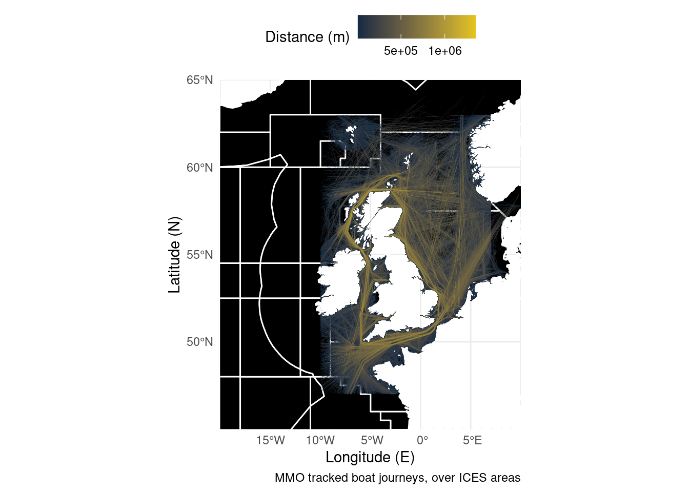
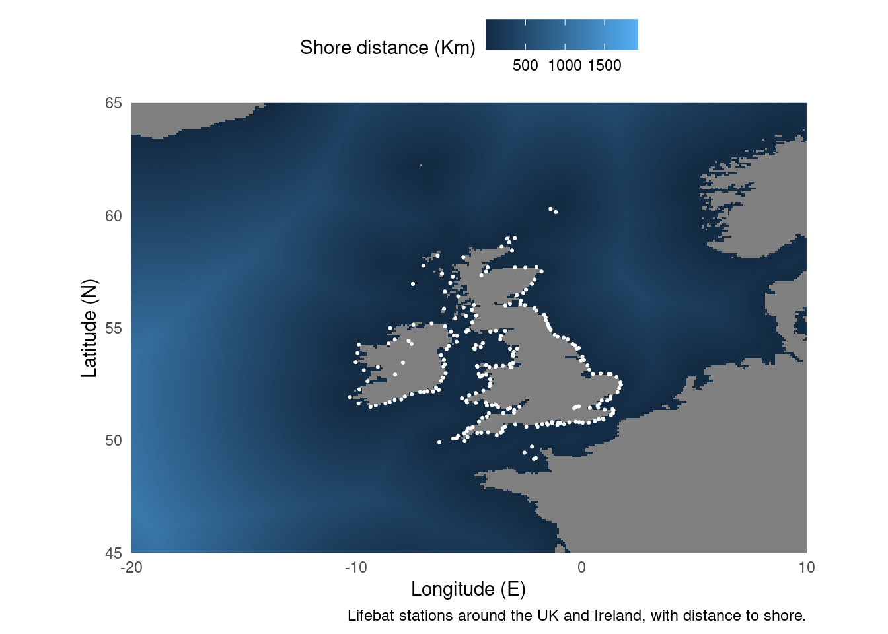

2 Layering Multiple Datasets
How to combine multiple datasets into a single map.
So you’ve now seen some very basic maps created in R, but what if you want to show multiple items on one image? Luckily as long as your data objects are based on the same coordinate system, you can simply add an extra line of code. Both the vessel tracks dataset and ICES management areas are currently in sf format. Remember, this behaves the same as any other ggplot, so the layers are plotted in the order they are specified in the code. Decide which shapes you want on top!
Boats <- sf::st_read("./Data/Anonymised_AIS_Derived_Track_Lines_2015_MMO/", quiet = TRUE, # Import data from a shapefile
query = "SELECT Shape_Leng FROM Anonymised_AIS_Derived_Track_Lines_2015_MMO WHERE Shape_Leng > 10000") %>% # You can import a subset of the data using an SQL query.
arrange(Shape_Leng) # Order the data so long journeys are
ICES <- sf::st_read("./Data/ICES_areas/", quiet = TRUE) %>% # Import the polygons from a shapefile
filter(SUBOCEAN == 2) %>% # Limit to north Atlantic
drop_na(F_SUBAREA) # Drop polygons labelled NA
ggplot() + # Start the plot
geom_sf(data = ICES, fill = "black", size = 0.5, colour = "white") + # Add the polygons
geom_sf(data = Boats, aes(colour = Shape_Leng), size = 0.05) + # Plot the lines
scale_colour_gradient(low = "#132B43", high = "#e6c41e") + # Set a colour scale
theme_minimal() + # Use an appearance template
theme(legend.position = "top") +
labs(x = "Longitude (E)", y = "Latitude (N)", # Add some labels
caption = "MMO tracked boat journeys, over ICES areas",
colour = "Distance (m)") +
coord_sf(xlim = c(-20, 10), ylim = c(45, 65), expand = FALSE)
For the second example we’re going to combine a raster and point data. ggplot has a geom_raster() but like all ggplot geometries it expects a dataframe. The trick is to convert the raster object to a dataframe. After that, as both the RNLI data and the distance from shore data use lat/lon coordinates we can put them on the same plot.
library(sdmpredictors) # Load functions
distance_to_shore <- load_layers("MS_biogeo05_dist_shore_5m") # Import raster
ne_atlantic_ext <- extent(-80, 45, 30.75, 72.5) # Define a cropping window
distance_to_shore_crop <- crop(distance_to_shore, ne_atlantic_ext) %>% # Crop raster to fit the North Atlantic
as.data.frame(xy = T)
RNLI <- read.csv("./Data/RNLI.csv") # Import data from a csv file
ggplot() +
geom_raster(data = distance_to_shore_crop,
aes(x=x, y=y, fill = MS_biogeo05_dist_shore_5m)) + # Plot ratser
geom_point(data = RNLI, aes(X, Y), colour = "white", size = 0.4) + # Add lifeboat stations
theme_minimal() + # Change appearance to a template
theme(legend.position = "top") +
coord_equal(xlim = c(-20, 10), ylim = c(45, 65), expand = FALSE) + # Set the aspect ratio and zoom in
labs(x = "Longitude (E)", y = "Latitude (N)", # Add some labels
caption = "Lifebat stations around the UK and Ireland, with distance to shore.",
fill = "Shore distance (Km)")
But what if we want to combine sf objects with rasters? There’s a package for raster data to connect with the sf philosophy called stars. The approach is the same as last time, but instead of converting to a dataframe we convert to an stars object.
library(sdmpredictors) # Load functions
library(stars)
distance_to_shore <- load_layers("MS_biogeo05_dist_shore_5m") # Import raster
ne_atlantic_ext <- extent(-80, 45, 30.75, 72.5) # Define a cropping window
distance_to_shore_crop <- crop(distance_to_shore, ne_atlantic_ext) %>% # Crop raster to fit the North Atlantic
st_as_stars() # Convert to a stars object
Boats <- sf::st_read("./Data/Anonymised_AIS_Derived_Track_Lines_2015_MMO/", quiet = TRUE, # Import data from a shapefile
query = "SELECT Shape_Leng FROM Anonymised_AIS_Derived_Track_Lines_2015_MMO WHERE Shape_Leng > 10000") %>% # You can import a subset of the data using an SQL query.
arrange(Shape_Leng) # Order the data so long journeys are
ICES <- sf::st_read("./Data/ICES_areas/", quiet = TRUE) %>% # Import the polygons from a shapefile
filter(SUBOCEAN == 2) %>% # Limit to north Atlantic
drop_na(F_SUBAREA) # Drop polygons labelled NA
ggplot() + # Start the plot
geom_stars(data = distance_to_shore_crop) + # Add the stars object
geom_sf(data = ICES, fill = NA, size = 0.1, colour = "white") + # Add the polygons
geom_sf(data = Boats, aes(colour = Shape_Leng), size = 0.05) + # Plot the lines
scale_colour_gradient(low = "#132B43", high = "#e6c41e") + # Set a colour scale
theme_minimal() + # Use an appearance template
theme(legend.position = "top") +
labs(x = "Longitude (E)", y = "Latitude (N)", # Add some labels
caption = "MMO tracked boat journeys, over ICES areas and shore distance",
colour = "Distance (m)",
fill = "Shore distance (Km)") +
coord_sf(xlim = c(-20, 10), ylim = c(45, 65), expand = FALSE) # Zoom in on the map